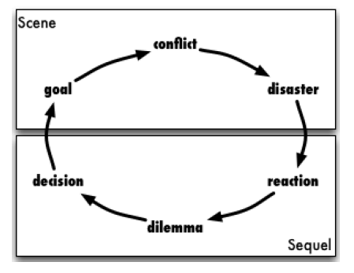

Newt Gingrich wrote a novel, and he’s a short story. Bill Clinton wrote a biography, and he’s a novel. ~James McBride
All good stories are made up of scenes and sequels.
Scene: Scenes provides action, excitement, and involvement.
Divide a scene into three parts:
GOAL – What is the protagonist trying to achieve in this scene? This may be different from his or her overall story goal. Example: The story goal may be to get his child back from the kidnappers, but to do that he is going to rob a bank to get enough money to pay the ransom. Rob a bank, or plan to rob a bank, becomes the scene goal.
CONFLICT – The major portion of the scene is conflict and drama, but this does not necessarily have to involve the antagonist just yet. You can also call the conflict, the complication. Example: What is making it hard for your character to achieve his goal. Is he a (retired) bank robber by trade or does he have no idea what he is doing? Both of these options will create conflict.
DISASTER – The end of the scene. It usually ends badly. The protagonist has no choice but to make a decision, or to embark on a path of change. Example: Does he return to a life of crime or does he join forces with criminals to achieve his goal? Does he get caught?
Sequel: A sequel is what happens directly after a big dramatic scene. It is also called a reaction scene, as in, the character has an emotional reaction to whatever happened in the action scene.
Divide a sequel into four stages:
EMOTION – Pure feeling, with little thought. It may last a while for your character, but your writing of it should be brief. Good emotions to explore here are anger, sadness, grief, and frustration. Example: Let’s say he was caught. The emotions he could experience are anger, disbelief, terror. Depending on who he is.
QUANDARY – The character calms down and thinks about what has happened. He or she reviews it, and analyses the pros and cons of what could happen next. Example: How will he save his son if he is in custody?
DECISION – The character makes a decision and commits to a goal. Example: He could confess to the police and enlist their help or he could try to escape.
ACTION – The character begins to act. He or she goes somewhere and does something. In so doing, we arrive at the next scene. Example: What did he decide to do?
Plan your scenes and sequels. There are handy templates in the workbook.